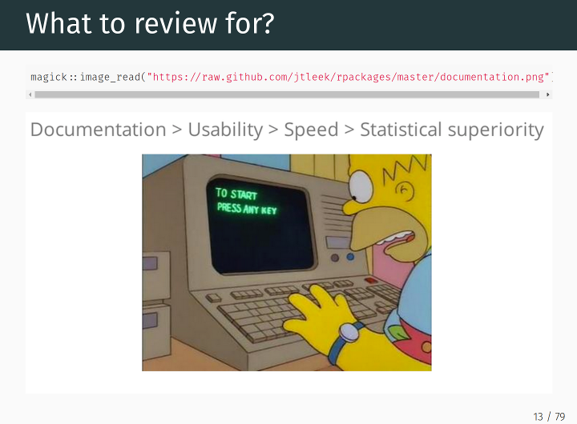
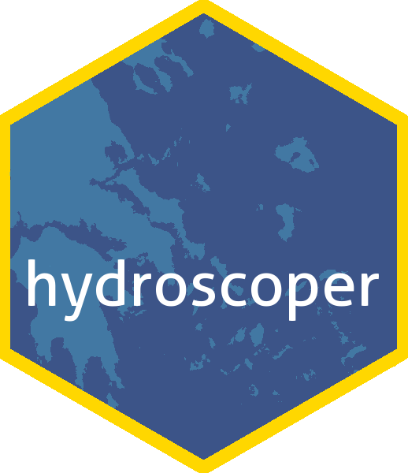

Apr 10, 2018
Software 📦
CRAN:  GitHub:
GitHub: 
New packages
- A new package
rdflib(v0.1.0) is on CRAN.rdflibis a high level wrapper around the redland package for common rdf applications.rdflibprovides utility functions to complete tasks involved in most landscape analysis. This package recently went through rOpenSci review. Check out the rdflib docs to get started.

- A new package
landscapetools(v0.3.0) is on CRAN.landscapetoolsprovides utility functions to complete tasks involved in most landscape analysis. This package recently went through rOpenSci review. Check out the landscapetools docs to get started. - A new package
essurvey(v1.0.0) is on CRAN.essurveylets you download data from the European Social Survey.essurveyprovides utility functions to complete tasks involved in most landscape analysis. This package recently went through rOpenSci review. Check out the essurvey docs to get started.
Releases
- A new version (
v0.4.0) ofwebchemis on CRAN. See the webchem NEWS for details. Check out the webchem README to get started.
Lots a 🐞 fixes!!!
- A new version (
v3.0.4) ofrotlis on CRAN. See the release notes for details. Check out the rotl vignettes to get started. - A new version (
v1.0.2) ofskimris on CRAN. See the skimr NEWS for details. Check out the skimr vignettes to get started.
You can create skimmers with the formula syntax from `rlang!
- A new version (
v0.6.0) ofgeojsoniois out - see the release notes for details. Check out the geojsonio vignettes to get started.
You can now control the object name output for
topojson_write, and there’s now an analog ofgeojson_spforsf(geojson_sf)` - A new version (
v1.2.0) ofGSODRis out. See the GSODR NEWS for details. Check out the GSODR vignettes to get started.
package slimmed down with move of
sp/sf/rgdalfrom Imports to Suggests - A new version (
v0.3.1) ofUSAboundariesis on CRAN. See the release notes for details. Check out the USAboundaries docs to get started.
a new vignette - woop woop
- A new version (
v0.5.0) ofwellknownis on CRAN. See the release notes for details. Check out the wellknown vignette to get started.
added wkt<–>wkb awesome sauce, and overhaul of
wkt2geojsonandgeojson2wkt - A new version (
v0.2.1) oftokenizersis on CRAN. See the release notes for details. Check out the tokenizers docs to get started. - A new version (
v0.3.0) ofmicrodemicis on CRAN. See the release notes for details. Check out the microdemic README to get started.
changed base url, make sure to get a new API 🔑
- A new version (
v1.6) ofpdftoolsis on CRAN. See the pdftools NEWS for details. Check out the pdftools README to get started.
Software Review ✔
We accept community contributed packages via our onboarding system - an open software review system, sorta like scholarly paper review, but way better. We’ll highlight newly onboarded packages here. A huge thanks to our reviewers, who do a lot of work reviewing (see the blog post on our review system), and the authors of the packages!
If you want to be a reviewer fill out this short form, and we’ll ping you when there’s a submission that fits in your area of expertise.
The following two packages recently went through our onboarding process and has been approved!
- EndoMineR > Functions to mine endoscopic and associated pathology datasets
- Author: Sebastian Zeki
- Issue: ropensci/onboarding#153
- Reviewers:
- qualtRics > Download Qualtrics Survey Data Directly into R
- Author: Jasper Ginn
- Issue: ropensci/onboarding#192
- Reviewers:
The following two packages were recently submitted:
- rppo > R functions to access Plant Phenology Ontology annotated datasets
- Author: John Deck
- Issue: ropensci/onboarding#207
- Note: still going through editor checks
- babette > Control BEAST2 from R
- Author: Richel Bilderbeek
- Issue: ropensci/onboarding#209
- Reviewers: not assigned yet
On the blog
main blog
Miles McBain was kind enough to cross-post a reflection on the value of software peer review from his personal blog: Where is the value in package peer review?.

As part of our series of posts on packages that have gone through rOpenSci onboarding Konstantinos Vantas wrote a post (ὕδωρ + σκοπῶ = water + observe) about his package hydroscoper for interacting with the Greek National Data Bank for Hydrometeorological Information.

As part of our series of posts on packages that have gone through rOpenSci onboarding Daniel Münch wrote a post (DoOR - The Database of Odorant Responses) about his packages DoOR.functions and DoOR.data for interacting with the Database of Odorant Responses.

Use cases
The following 18 works use/cite rOpenSci software:
- Tang used the rOpenSci packages plotly and RSelenium in his paper Autoplotly-Automatic Generation of Interactive Visualizations for Popular Statistical Results 1
- Dion et al. used rcrossref in their paper Gendered Citation Patterns across Political Science and Social Science Methodology Fields 2
- Gearty et al. used rgbif in their paper Energetic tradeoffs control the size distribution of aquatic mammals 3
- Nolan & Padilla-Parra cited ijtiff in their paper ijtiff: An R package providing TIFF I/O for ImageJ users 4
- Gershanov et al. used iheatmapr in their paper MicroRNA–mRNA expression profiles associated with medulloblastoma subgroup 4 5
- Peters et al. used oai in their paper Zenodo in the Spotlight of Traditional and New Metrics 6
- Tierney cited his R package visdat in his JOSS paper on the software itself visdat: Visualising Whole Data Frames 7
- Mullen et al. used tokenizers and textreuse in their paper Fast, Consistent Tokenization of Natural Language Text 8
- Sales et al. used spocc in their paper Niche conservatism and the invasive potential of the wild boar 9
- Essl et al. used plotly in their paper Machine learning analysis for a flexibility energy approach towards renewable energy integration with dynamic forecasting of electricity balancing power 10
- Grosser et al. used rnoaa in their paper Multivariate skeletal analyses support a taxonomic distinction between New Zealand and Australian Eudyptula penguins (Sphenisciformes: Spheniscidae) 11
- Bowser et al. used bold in their paper Arthropod and oligochaete assemblages from grasslands of the southern Kenai Peninsula, Alaska 12
- Divoll et al. used bold in their paper Disparities in second-generation DNA metabarcoding results exposed with accessible and repeatable workflows 13
- Cravens et al. used bold in their paper Illuminating prey selection in an insectivorous bat community exposed to artificial light at night 14
- Fox et al. used fingertipsR in their paper fingertipsR: an R package for accessing population health information in England 15
- ȚÎRU & NECULA used fingertipsR in their paper rTempo–an R package to access the TEMPO-Online database 16
- Manlove & Belou used our gender package in their paper Authors and editors assort on gender and geography in high-rank ecological publications 17
- Bennett et al. used phylotaR in their paper phylotaR: An automated pipeline for retrieving orthologous DNA sequences from GenBank in R 18
In the news
Jorge Cimentada wrote a blog post RSelenium and scraping Catalan educational data using, you guessed it, our RSelenium package.
I just figured out how to use Docker and #rstats RSelenium on my Windows 10 machine. Blogged about it https://t.co/sxN5LZktIy on a case study on scraping educational data.
— Jorge Cimentada (@cimentadaj) March 28, 2018
Caryn Johansen and Ciera Martinez of the Cabinet of Curiosity blog wrote a blog post on Exploring Neotoma Part 2: Extinct Mammal Distributions using our neotoma package

Juan Mayorga wrote a nice blog post about mapping fisheries, while using our rnaturalearth package
Check out this blog post to learn how SFG's @juansmayorga made this global map of transnational fisheries. #dataviz #rstats https://t.co/YGBHS0Szrr pic.twitter.com/9xR0PDD63l
— SFG UC Santa Barbara (@sfgucsb) March 20, 2018
Daniela Vázquez wrote a blog post Scrapeando las Sesiones Parlamentarias de Uruguay (english title: Scraping the Parliamentary Sessions of Uruguay) - and used rOpenSci packages pdftools and robotstxt
🎉 Nuevo #rstatsES blog post 🤓
— Daniela Vázquez (@d4tagirl) April 4, 2018
“Scrapeando las sesiones parlamentarias de Uruguay” 🇺🇾 https://t.co/4Apx4FHfel
De qué se trata?
🤖 Scrapear la web usando rvest y robotstxt
📝 Extraer texto de archivos pdf con pdftools
🔎 Datos abiertos y transparencia pic.twitter.com/yHAYMac4ZI
Keep up with rOpenSci
- Mailing list: Sign up with an email address to get this newsletter sent to your inbox -> ropensci.org/#subscribe
- Alternatively, you can subscribe to this newsletter via our XML feed at https://ropensci.github.io/biweekly/feed.xml or our JSON feed at https://ropensci.github.io/biweekly/feed.json
- rOpenSci on Twitter: @ropensci
- The rOpenSci blog at ropensci.org/blog - you can subscribe in any RSS aggregator, or manually via https://ropensci.org/feed.xml. We also announce new blog posts on our Twitter account.
Footnotes
-
Tang, Y. (2018). Autoplotly-Automatic Generation of Interactive Visualizations for Popular Statistical Results. arXiv preprint arXiv:1803.08424. https://arxiv.org/pdf/1803.08424 ↩
-
Dion, Michelle L., Jane L. Sumner, and Sara McLaughlin Mitchell. “Gendered Citation Patterns across Political Science and Social Science Methodology Fields.”, Forthcoming, Political Analysis. See also the Appendix for the paper and the replication materials.” http://www.saramitchell.org/DSM2018PAfinal.pdf ↩
-
Gearty, W., McClain, C. R., & Payne, J. L. (2018). Energetic tradeoffs control the size distribution of aquatic mammals. Proceedings of the National Academy of Sciences, 201712629. https://doi.org/10.1073/pnas.1712629115 ↩
-
Nolan, R., & Padilla-Parra, S. (2018). ijtiff: An R package providing TIFF I/O for ImageJ users. Journal of Open Source Software, 3(23), 633. https://doi.org/10.21105/joss.00633 ↩
-
Gershanov, S., Toledano, H., Michowiz, S., Barinfeld, O., Pinhasov, A., Goldenberg-Cohen, N., & Salmon-Divon, M. (2018). MicroRNA–mRNA expression profiles associated with medulloblastoma subgroup 4. Cancer Management and Research, Volume 10, 339–352. https://doi.org/10.2147/cmar.s156709 ↩
-
Peters, I., Kraker, P., Lex, E., Gumpenberger, C., & Gorraiz, J. I. (2017). Zenodo in the Spotlight of Traditional and New Metrics. Frontiers in Research Metrics and Analytics, 2. https://doi.org/10.3389/frma.2017.00013 ↩
-
Tierney, N. (2017). visdat: Visualising Whole Data Frames. The Journal of Open Source Software, 2(16), 355. https://doi.org/10.21105/joss.00355 ↩
-
Mullen, L., Benoit, K., Keyes, O., Selivanov, D., & Arnold, J. (2018). Fast, Consistent Tokenization of Natural Language Text. Journal of Open Source Software, 3(23), 655. https://doi.org/10.21105/joss.00655 ↩
-
Sales, L. P., Ribeiro, B. R., Hayward, M. W., Paglia, A., Passamani, M., & Loyola, R. (2017). Niche conservatism and the invasive potential of the wild boar. Journal of Animal Ecology, 86(5), 1214–1223. https://doi.org/10.1111/1365-2656.12721 ↩
-
Essl, A., Ortner, A., Haas, R., & Hettegger, P. (2017). Machine learning analysis for a flexibility energy approach towards renewable energy integration with dynamic forecasting of electricity balancing power. 2017 14th International Conference on the European Energy Market (EEM). https://doi.org/10.1109/eem.2017.7981877 ↩
-
Grosser, S., Scofield, R. P., & Waters, J. M. (2017). Multivariate skeletal analyses support a taxonomic distinction between New Zealand and Australian Eudyptula penguins (Sphenisciformes: Spheniscidae). Emu - Austral Ornithology, 117(3), 276–283. https://doi.org/10.1080/01584197.2017.1315310 ↩
-
Bowser, M., Morton, J., Hanson, J., Magness, D., & Okuly, M. (2017). Arthropod and oligochaete assemblages from grasslands of the southern Kenai Peninsula, Alaska. Biodiversity Data Journal, 5, e10792. https://doi.org/10.3897/bdj.5.e10792 ↩
-
Divoll, T. J., Brown, V. A., Kinne, J., McCracken, G. F., & O’Keefe, J. M. (2018). Disparities in second-generation DNA metabarcoding results exposed with accessible and repeatable workflows. Molecular Ecology Resources. https://doi.org/10.1111/1755-0998.12770 ↩
-
Cravens, Z. M., Brown, V. A., Divoll, T. J., & Boyles, J. G. (2017). Illuminating prey selection in an insectivorous bat community exposed to artificial light at night. Journal of Applied Ecology, 55(2), 705–713. https://doi.org/10.1111/1365-2664.13036 ↩
-
Fox, S., Flowers, J., Thelwall, S., Flint, D., & Hain, D. (2017). fingertipsR: an R package for accessing population health information in England. https://doi.org/10.1101/189167 ↩
-
ȚÎRU, A. M., & NECULA, M. (2017). rTempo–an R package to access the TEMPO-Online database. Romanian Statistical Review, (4). http://www.revistadestatistica.ro/wp-content/uploads/2017/11/RRS-4_2017_A04.pdf ↩
-
Manlove, K. R., & Belou, R. M. (2018). Authors and editors assort on gender and geography in high-rank ecological publications. PLOS ONE, 13(2), e0192481. https://doi.org/10.1371/journal.pone.0192481 ↩
-
Bennett, D. J., Hettling, H., Silvestro, D., Zizka, A., Bacon, C. D., Faurby, S., … Antonelli, A. (2018). phylotaR: An automated pipeline for retrieving orthologous DNA sequences from GenBank in R. https://doi.org/10.20944/preprints201804.0047.v1 ↩